Come, Discover, and Explore
Learn more about in this website, on how beautiful and diverse the History,
Geography, Culture, and its Demographics of the Philippines.
About The Philippines
" History of the Philippines "
| 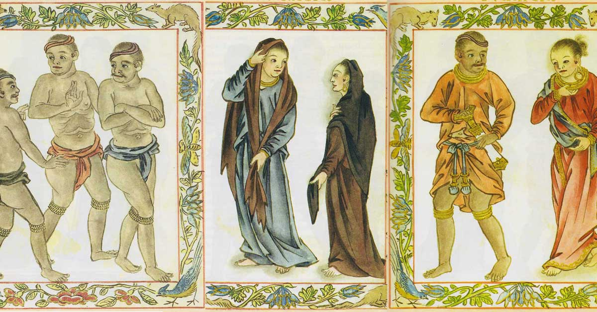 |
" Pre-Colonial Philippines "The first peoples to inhabit the Philippines migrated more than 4,000 years ago from what is today southern China. These peoples did not just populate the Philippines but dispersed throughout Southeast Asia. Early settlements of the Philippine archipelago occurred along rivers which kept populations somewhat isolated from one another. Rivers provided natural resources (water and protein via seafood) to sustain small communities. While these settlements were scattered along rivers, they did not develop a political center. Instead, early settlers saw themselves in relation to smaller communities and developed local alliances and allegiances. |
| 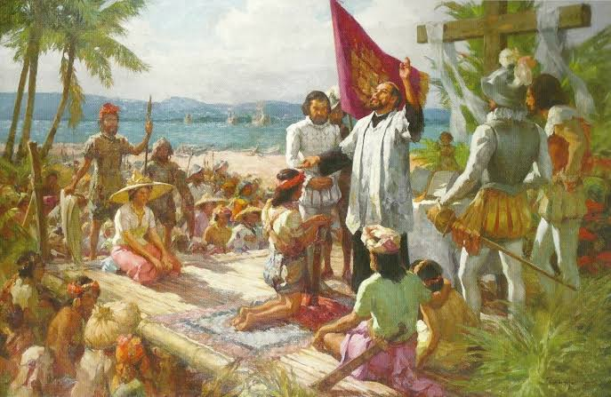 |
" Spanish Rule in Philippines "In 1521, Ferdinand Magellan landed in the Philippines and was killed by Filipinos in a battle between two tribes. Spain continued to try to settle the Philippines for 40 unsuccessful years until 1565 when Miguel López de Legazpi established the first permanent Spanish settlement in Cebu. From there, the Spanish slowly took over the Islamic control that had been in place since 1300s and replaced their empire with a Catholic one. More Spanish arrived from Mexico, reaffirming the beginning of the Spanish Philippines. While the conquistadores took land and overruled local authorities, Catholic friars established churches, schools, and aid. This combination assured a solid Spanish influence in the Philippines that lasted for centuries and still lingers today. |
| 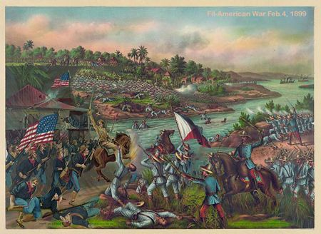 |
" American Rule in Philippines "The United States exercised formal colonial rule over the Philippines between 1899 and 1946. As the Spanish surrenders the Philippines and several islands into the American's hand during the Tready of Paris, the American deemed Filipinos that their are incapable of self-governing as a result of that the republic of malolos was not recognized. Resulting in Philippine-American War, after the war the American imposes rules, and new culture to the Philippines such as education, free-trade system, democratic system and many more. |
| 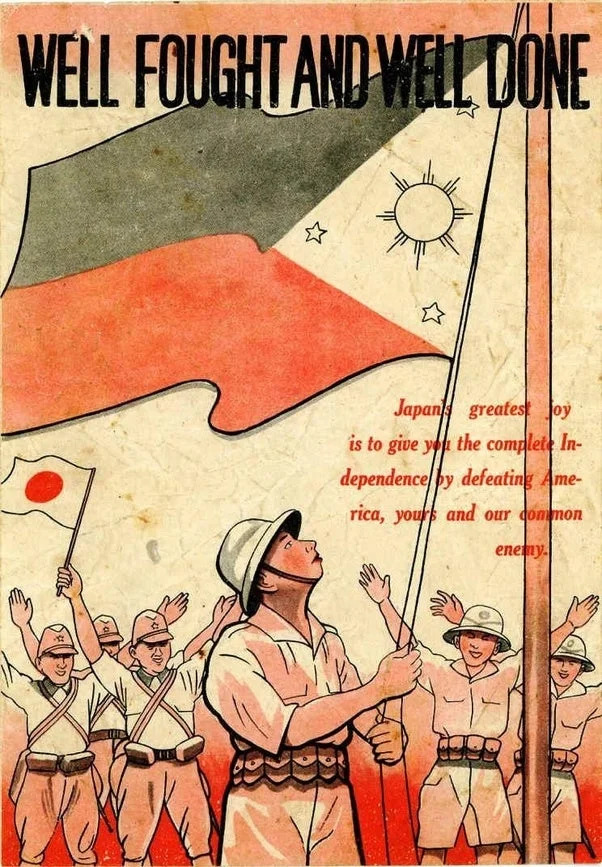 |
" Japanese Rule in Philippines "The Japanese military authorities immediately began organizing a new government structure in the Philippines after they take the Philippines from American grasp. Although the Japanese had promised independence for the islands after occupation, they initially organized a Council of State through which they directed civil affairs until October 1943, when they declared the Philippines an independent republic. Most of the Philippine elite, with a few notable exceptions, served under the Japanese. The puppet republic was headed by President José P. Laurel. Philippine collaboration in puppet government began under Jorge B. Vargas, who was originally appointed by Quezon as the mayor of City of Greater Manila before Quezon departed Manila. In addition, many war crimes committed by forces of the Empire of Japan against surrendered Allied forces and civilians were documented. they have imparted some of their cultures to us through strict law such as haiku. |
More about The Philippines
" Philippine Geography And Environment "
 |
" Geography and Environment "The Philippines is an archipelago composed of 7,107 separate islands (7,106 during high tide), only 880 of which are inhabited. Sites that would live up to anyone's fantasy of a pristine South Pacific paradise of white sand beaches and crystal blue waters, they are a popular destination for tourists from around the world. The interior of the country is generally mountainous, with several mountain peaks reaching almost 10,000 feet. There are numerous volcanoes in the country, and some are frequently active. in addition, it has vast fertile plains and features scenic hills, valleys, and rivers. The Climate of the Philippines is tropical and maritime. It is similar in many respects to the climate of the countries of Central America. It has relatively high temperature, high humidity and abundant rainfall. |
More about The Philippines
" Philippine Demographics "
" Demographics "
|
More about The Philippines
" Culture in the Philippines "
| 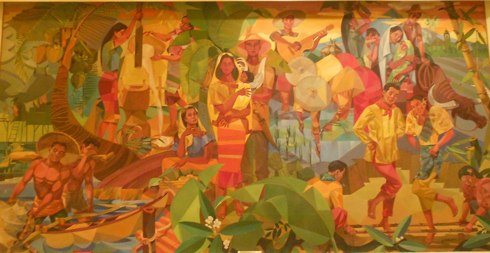 |
" Music, Arts and Literature "The music, arts, and literature in the Philippine are very diversed as it was occupied by colonizers in the past. such as Spanish, American and Japanese. In addition, on top of that Filipinos are known to be very creative from stories of folklore and in literature the Philippines most renowned hero Dr. Jose Rizal. about his novels and books that inspired many Filipinos and our known heroes such as Aguinalo and Bonifacio. and in art, Filipinos are known to be very creative in terms of creating of art any materials that can be used for will be utilized in creating arts for example an art from junk, leaves, etc. |
" Values and Social Customs "In the Philippines, family is valued so much that children live with their parents until they are married. The local family culture is something that many people applaud because the locals value family time so much. The Filipino culture and values are one of the reasons why it is so popular across the world. one of the example of Filipino values are pagmamano, bayanihan, makabayan and super friendly. |
| 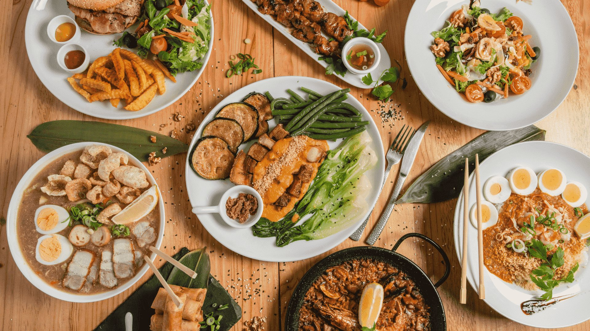 |
" Cuisine "The food culture in the Philippines is very different from that of the Western's culture. Filipinos are big eaters and love to eat rice. Some popular Filipino foods influenced by other nations are paella, morcon, burges, pies, noodles, samgyupsal, and more. But there are many foods that you can try as these foods are the pride of Filipino as I can tell, such as adobo, sinigang na baboy, halo-halo, biko, Bicol express and balut. |
| 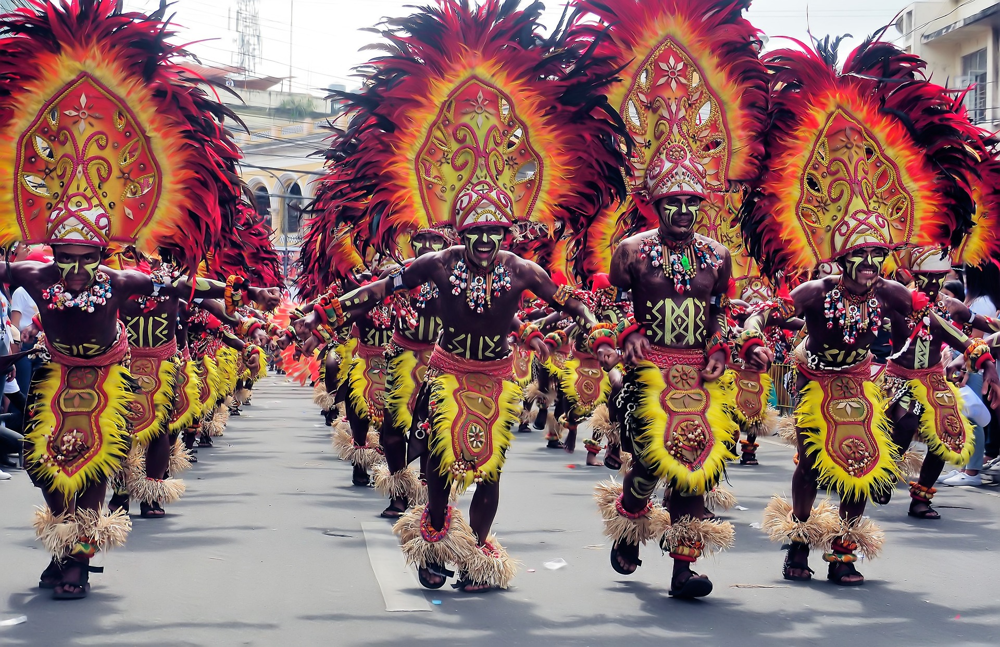 |
" Celebrations "Philippine loves celebrations. In fact there is a celebration no matter how small it is. May it be for birthdays, moving-up, job promotion, gaining an item, Patron Saint celebrations. Remember no matter how hard life gets, here in the Philippines there is a plenty of time for celebrations. |
Tourist Attraction
" located in Luzon "
| 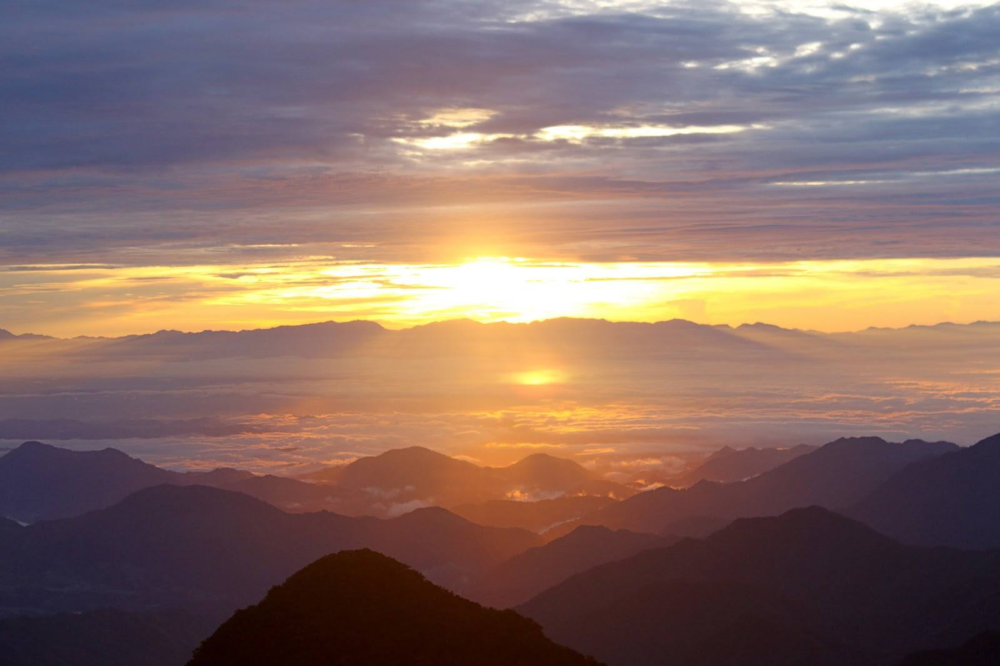 |
1. Mt. AmuyaoIt’s one of the highest mountains in the Philippines and home to an incredible array of wildlife species. It has one of the most difficult climbs especially when you get to a part called, “Stairway to Heaven.” Mt. Amuyao also offers a stunning view of the sunrise and sunset complementing the sea of clouds. It is one of the favourite hiking spot in North Luzon. |
| 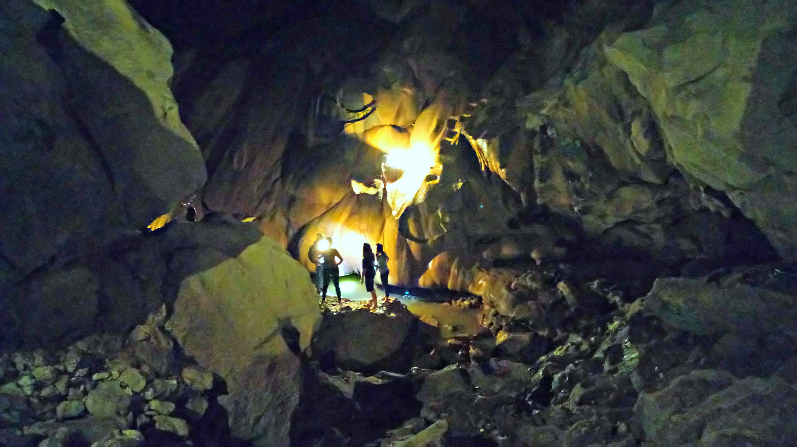 |
2. Sumaguing CaveIf you want to spelunk and adventure the depths of this caves say no more. It is easy and manageable as it goes down. Sumaguing Cave is one of the most visited tourist spots in Luzon area. It's considered the deepest cave in the Philippines. Natural-made pools with icy-cold and crystal-clear waters are found inside. Like the tortoise shaped formation, This Cave is located in Sagada, northern Philippines. |
| 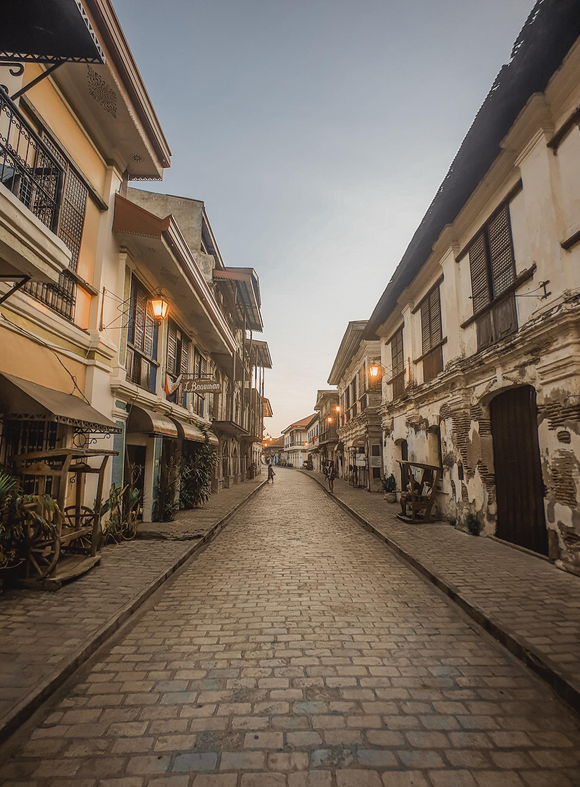 |
3. Vigan CityThe sacred building is the initiative of Mayor Samsudin Dimaukom. The people of Datu Saudi Ampatuan believe that the mosque will bring them unity. Inspired by the mosque's color and design, the town's municipal hall, police stations, and public market are also set to be repainted pink. as pink represents peace, harmony, and love. Its magnificent interiors also draw tourists to countries like the Philippines, likewise it is a perfect example of mosque into an attraction. Please be mindful and give respect in visiting sacred locations. |
Tourist Attraction
" located in Visayas "
 |
1. Hinagdanan CaveHinagdanan Cave is a limestone karst cave that was accidentally discovered by a local. It was used as a hideout by Filipinos trying to escape from the Japanese army during World War II. The space within the cave is less than 100 meters long. thus a number of people is restricted to 50 only. In addition, Hinagdanan Cave is one of the top tourist spots in Bohol. |
| 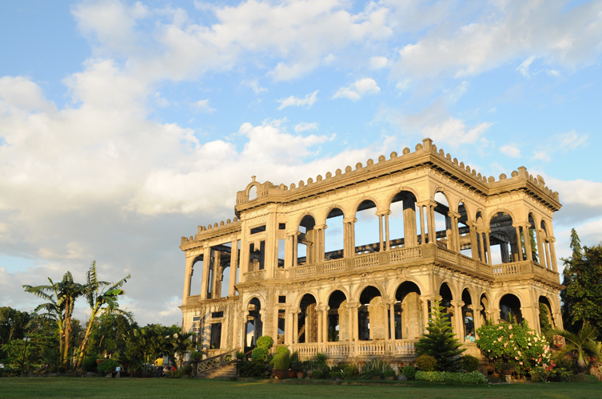 |
2. The RuinsThe Ruins refers to a large family mansion located at the heart of an old sugarcane plantation. Don Mariano Ledesma Lacson commissioned the construction of the original mansion in the 1900s. During the Japanese Occupation in the 1940s, Filipino rebels set the mansion on fire to stop the Japanese army from using it. Though this massive building is not a tomb, but a reminder of love to his late wife, who died during labor. It is a sight to behold. |
| 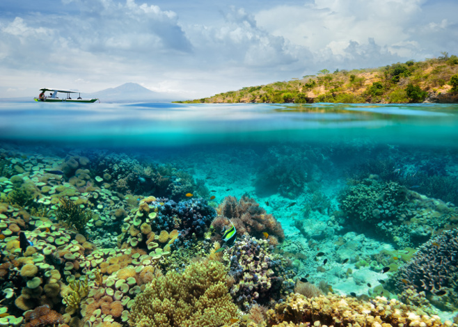 |
3. Monad Shoal in Malapascua IslandMalapascua, Cebu is a popular diving destination in the Philippines. Monad Shoal is composed of a sunken coral plateau that reaches a depth of about 20 meters. This is the best place to spot rare Thresher Sharks as they use this area as a cleaning station and in addition, The shoal is also home to small marine life like Mantis Shrimps. It is an excellen tourist destination if you are interested in diving. |
Tourist Attraction
" Located in Mindanao "
| 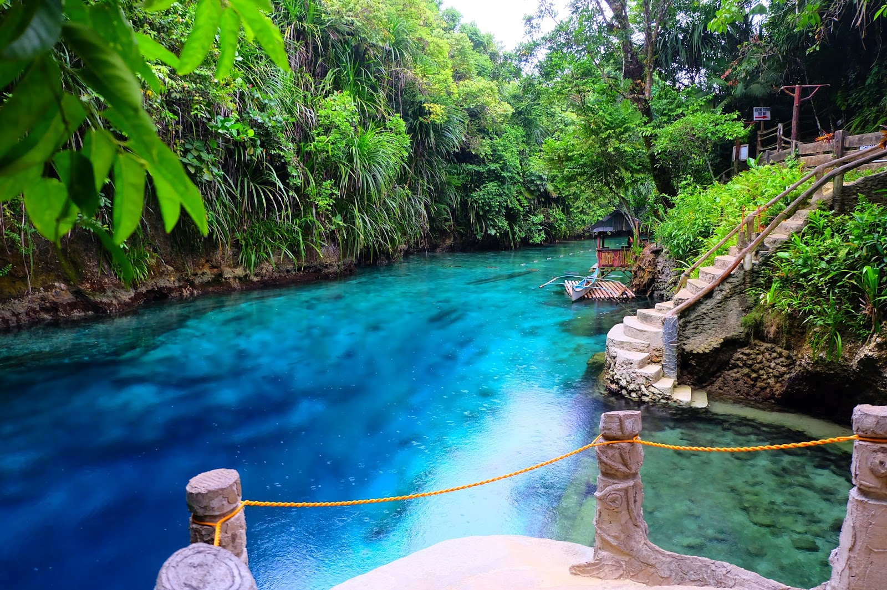 |
1. Hinatuan Enchanted RiverHinatuan Enchanted River is a magical clear blue saltwater river hidden in the jungle, and flowing into the Pacific Ocean. Arguably the most magnificent tourist attraction in Mindanao, and one of the most beautiful places in the Philippines. |
| 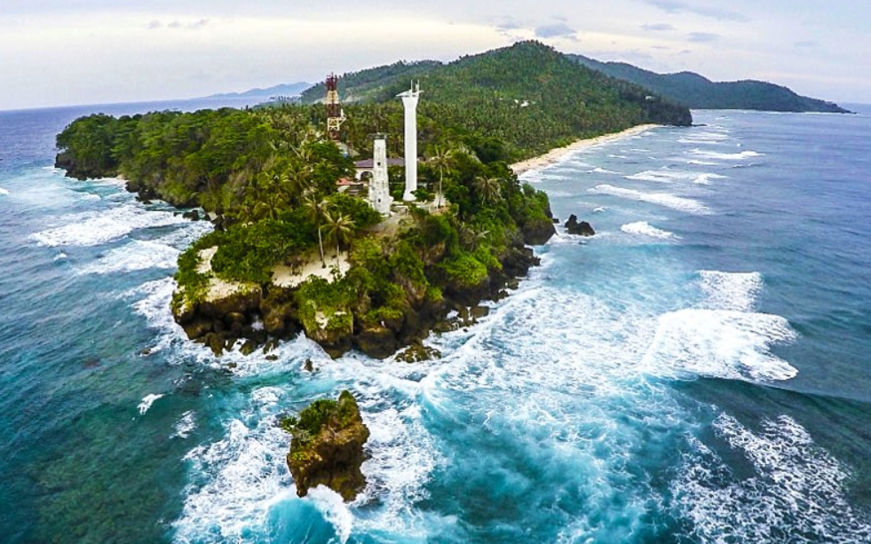 |
2. Cape of San AgustinCape of San Agustin houses three lighthouses which offer equally breathtaking views of the sea. It is one of the best places in Mindanao where you can see amazing marine life. Many divers frequent this place because of the diving experience at "the wall". It is the "mixes" of the remains of the Spanish colonial rule and offers the pristine beauty of Philippine beaches. |
| 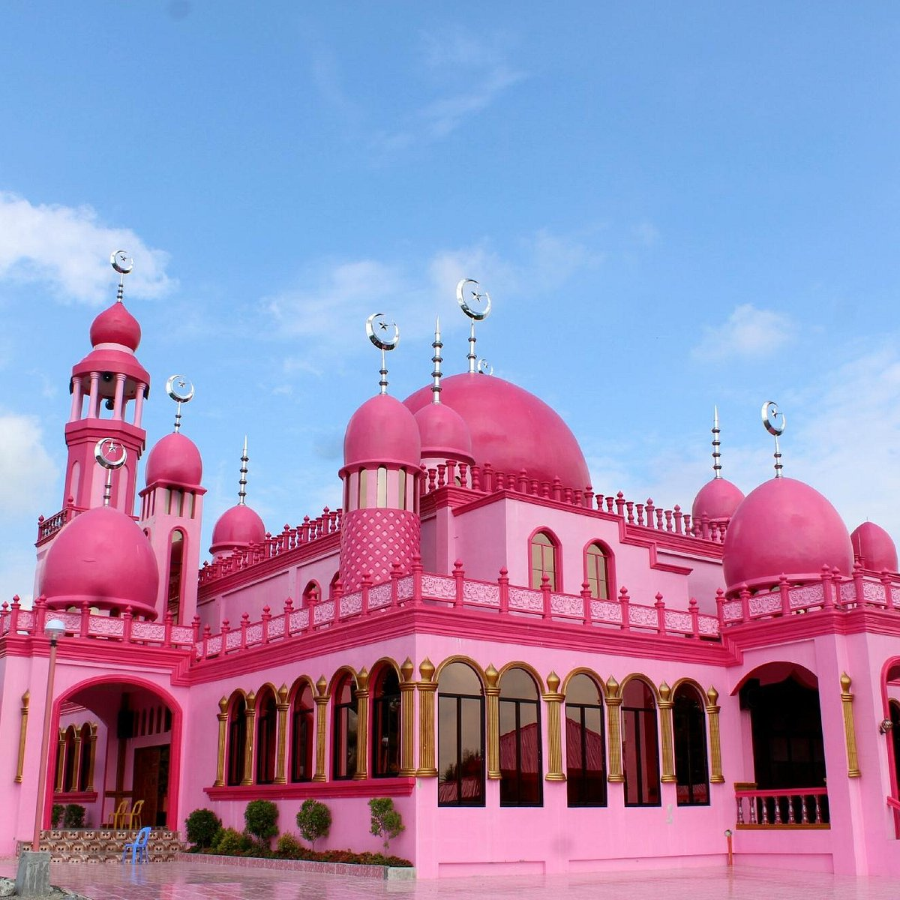 |
3. Pink MosqueNow tired seeing caves blah, blah. But you want some seightseeing? Then Vigan City is the one you are looking for. Located in Vigan, Ilocos sur... it is the Capital of Ilocos Sur and one of the best preserved colonial towns in the Philippines. The town's historical and cultural significance feed wanderlust as well as a traveler's mind and soul. because of its best preservation it feels like going back in time. |
ReferencesSource: (In Tourist Destinations)15 Must-Visit Visayas Tourist Spots: Boracay White Beach,... (n.d.). Retrieved from Guide to the Philippines website: https://guidetothephilippines.ph/articles/what-to-experience/visayas-tourist-spots Top 20 Must-Visit Luzon Tourist Spots. (2020, December 21). ZenRooms Blogs. https://www.zenrooms.com/blog/luzon-tourist-spots/ 20 Most Beautiful Tourist Spots in Mindanao. (2020, November 27). ZenRooms Blogs. https://www.zenrooms.com/blog/tourist-spots-in-mindanao/ Top 18 Must-Visit Tourist Spots in Mindanao: Beaches, Islands, Waterfalls. (n.d.). Guide to the Philippines. Retrieved December 6, 2022, from https://guidetothephilippines.ph/articles/what-to-experience/mindanao-tourist-spots#9-pink-mosque-maguindanao Source: (In about Philippines) Reid, A. (2020, June 1). The Spanish Philippines: Its History and Influence on 7,000 Islands. Homeschool Spanish Academy. https://www.spanish.academy/blog/the-spanish-philippines-its-history-and-influence/ United States Colonial Rule in the Philippines | Encyclopedia.com. (2019). Encyclopedia.com. https://www.encyclopedia.com/history/encyclopedias-almanacs-transcripts-and-maps/united-states-colonial-rule-philippines Philippines geography, maps, climate, environment and terrain from Philippines | CountryReports - CountryReports. (2022). Www.countryreports.org. https://www.countryreports.org/country/Philippines/geography.htm World Population Review. (2021). Philippines Population 2020 (Demographics, Maps, Graphs). Worldpopulationreview.com. https://worldpopulationreview.com/countries/philippines-population Here’s Why Philippine Culture is Different From Others. (2021, May 23). ZenRooms Blogs. https://www.zenrooms.com/blog/philippine-culture/ Japanese occupation of the Philippines. (2022, November 25). Wikipedia. https://en.wikipedia.org/wiki/Japanese_occupation_of_the_Philippines#:~:text=Japan%20occupied%20the%20Philippines%20for The Philippines: Historical Overview · The Philippines and the University of Michigan, 1870-1935 · Philippines. (2022). Umich.edu. https://philippines.michiganintheworld.history.lsa.umich.edu/s/exhibit/page/the-philippines-historical-overview#:~:text=In%20fact%2C%20it%20was%20not |